Memulai dengan RAZ Download Manager
Cara Ngedonlot File Pertama Lo
- Otomatis dari Browser: Klik tombol download apa pun di web (Chrome, Edge, Firefox, Brave, dll). Ekstensi RAZ Download Manager akan langsung menangkap link dan membuka jendela konfirmasi download.
- Salin Link ke Clipboard: Cukup klik kanan link file di browser lalu pilih Copy Link Address. RAZ Download Manager secara otomatis memunculkan pop-up donlotan instan.
- Tombol Tambah URL Manual: Buka aplikasi RAZ Download Manager, klik tombol + Tambah URL di toolbar atas (atau tekan Ctrl+V), lalu klik Mulai Download.
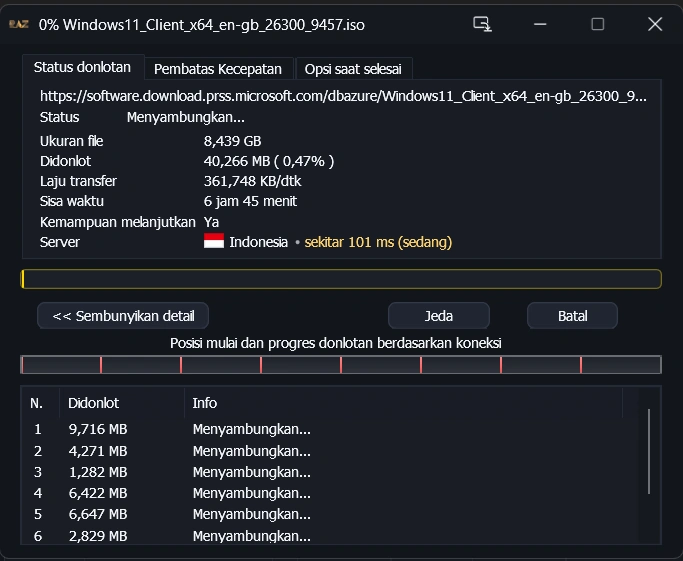
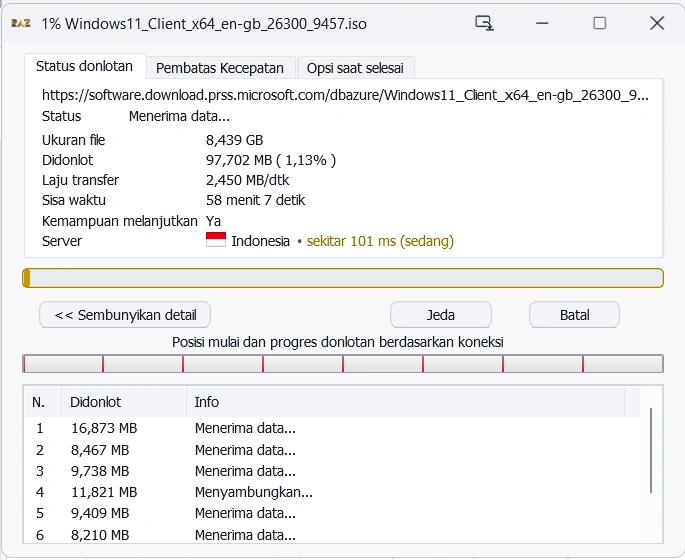
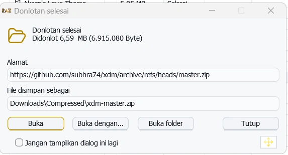
Integrasi Ekstensi Browser Lengkap
Cara Pasang Ekstensi Browser & Menangkap Donlotan Otomatis
Langkah Instalasi Ekstensi:
- Google Chrome / Edge / Brave / Opera: Donlot file
.crxresmi dari Pusat Donlotan. Buka menuchrome://extensions, aktifkan Developer mode (pojok kanan atas), lalu drag & drop file.crxke dalam halaman tersebut. - Mozilla Firefox / Floorp / LibreWolf: Donlot file
.xpiresmi, bukaabout:addonsdi Firefox, klik ikon gear → Install Add-on From File, dan pilih file.xpi. - Metode Unpacked Folder: Lo juga bisa ekstrak file
.zipekstensi, lalu di browser klik tombol Load Unpacked dan pilih foldernya.
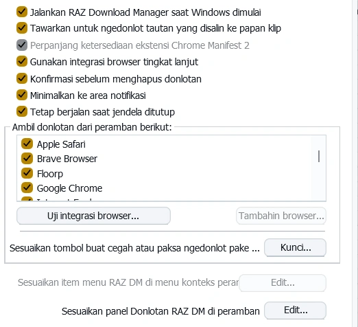
Ngedonlot Video & Audio dari Web
Menangkap Video Streaming (YouTube, TikTok, Vimeo, dll)
yt-dlp dan FFmpeg untuk membaca semua pilihan resolusi (dari 360p, 720p, 1080p, hingga 4K UHD 60fps) serta format audio murni (MP3/M4A).
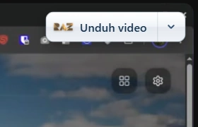
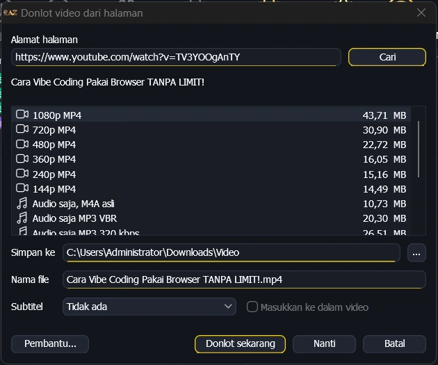
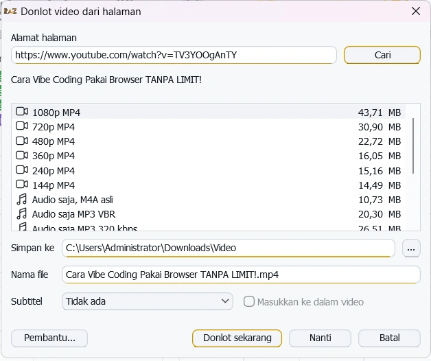
.mp4/.mkv atau menyimpannya sebagai file .srt terpisah.
Donlot File Torrent & Magnet Langsung
Tanpa Perlu Software Torrent Eksternal
.torrent atau link magnet:?xt=... dalam daftar unduhan yang sama!
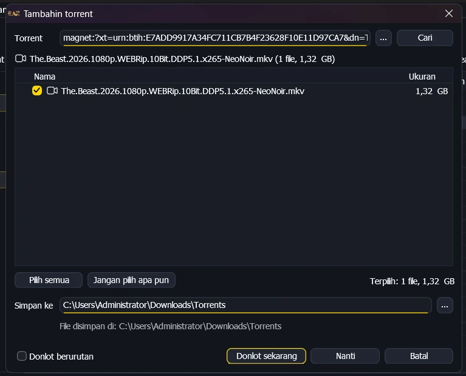
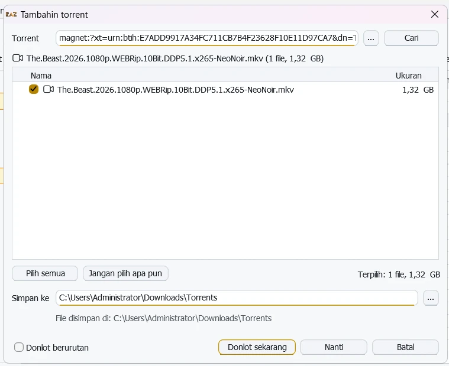
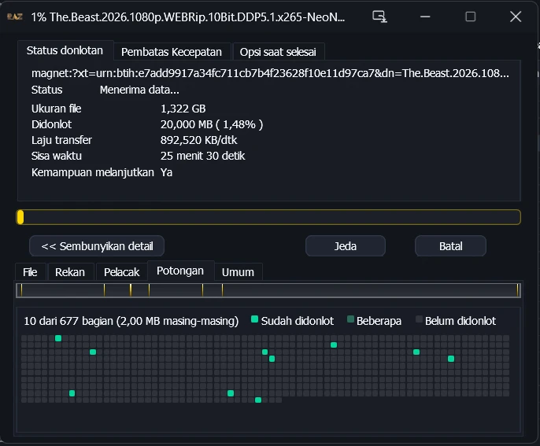
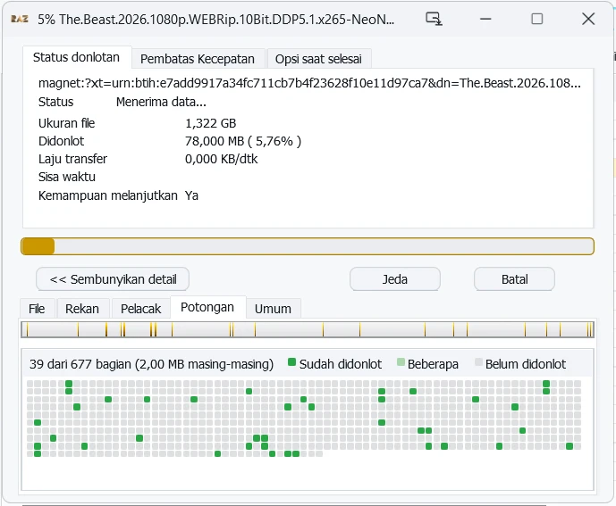
Jadwal Donlot Malam & Speed Limiter
Donlotan Terjadwal Malam Hari (Night Scheduler) & Auto-Shutdown
- Masukkan file-file yang ingin didonlot ke dalam Antrean Utama atau antrean kustom.
- Buka menu Unduhan → Penjadwal, atur jam mulai (misal: pukul 01:00) dan jam berhenti (misal: pukul 06:00).
- Centang opsi Matikan komputer saat antrean selesai agar PC lo otomatis shutdown atau sleep setelah semua file terdonlot dengan aman.
Melanjutkan Donlotan yang Putus & Memperbarui Alamat (Resume / Refresh)
Mode Portable di Flashdisk USB
data/ mandiri. Aplikasi bisa lo bawa dan jalankan di komputer mana pun tanpa perlu install dan tanpa meninggalkan jejak di registry komputer yang lo pinjam!
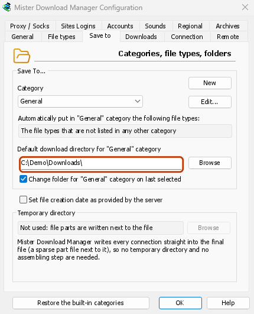
Daftar Pintasan Keyboard (Shortcuts)
Kendalikan seluruh operasi download dengan tombol keyboard cepat layaknya power user.
| Tombol Pintasan | Aksi / Perintah | Keterangan |
|---|---|---|
| Ctrl + V | Tambah URL Baru | Otomatis menempelkan alamat URL yang tersalin di clipboard ke form download. |
| Space / Enter | Lanjutkan / Jeda Donlotan | Mengganti status download yang dipilih antara berjalan (downloading) dan jeda (paused). |
| Delete | Hapus dari Daftar | Menghapus item unduhan yang dipilih dari riwayat aplikasi (file di disk tetap aman). |
| Shift + Delete | Hapus Permanen Bersama File | Menghapus item dari daftar sekaligus menghapus file fisiknya dari hard disk. |
| Ctrl + A | Pilih Semua Donlotan | Memilih seluruh item unduhan yang ada di kategori/antrean saat ini. |
| Ctrl + F | Cari File Unduhan | Membuka bilah pencarian cepat untuk memfilter nama file di daftar unduhan. |
| F2 | Ubah Nama File (Rename) | Mengganti nama file download sebelum atau sesudah file selesai diunduh. |
| F5 | Segarkan Daftar (Refresh) | Memperbarui status tampilan antrean dan kalkulasi ukuran file. |
| Alt + Enter | Buka Properti Unduhan | Melihat detail teknis file, header HTTP, cookies, dan log riwayat koneksi. |
Troubleshooting & Kendala Umum
1. Peringatan Windows SmartScreen ("Windows protected your PC")
Saat pertama kali menjalankan installer di Windows 10/11, Windows SmartScreen mungkin memunculkan layar biru peringatan karena binary open-source ini belum menggunakan sertifikat EV code-signing berbayar dari Microsoft.
2. Ekstensi Browser Tidak Menangkap Link Otomatis
Jika browser lo mendonlot file secara native alih-alih dialihkan ke RAZ Download Manager, periksa hal-hal berikut:
- Pastikan aplikasi desktop RAZ Download Manager sedang berjalan (aktif di system tray).
- Buka menu Opsi → Umum, pastikan centang "Gunakan integrasi browser tingkat lanjut" dalam keadaan ON dan nama browser lo tercentang.
- Pastikan ekstensi di halaman
chrome://extensionsatauabout:addonsdalam status aktif (toggle ON). - Periksa daftar ekstensi file di Opsi → Jenis File; pastikan ekstensi file yang lo ingin donlot (misal:
ZIP,ISO,EXE,MP4) sudah terdaftar di sana.
3. Integrasi AI Assistant via MCP (Model Context Protocol)
RAZ Download Manager dilengkapi server MCP native (razdownloadmanager-mcp). Lo bisa menghubungkannya ke Claude Desktop, Cursor, VS Code, atau Antigravity untuk memerintahkan donlotan menggunakan bahasa manusia santai (contoh: "Tolong donlot file ISO terbaru dari link ini dan taruh di folder Games").
127.0.0.1) dengan proteksi security token rahasia di folder data lo.